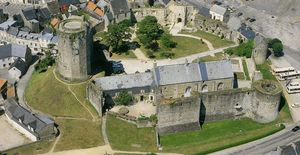
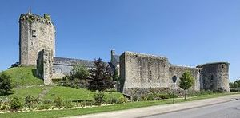
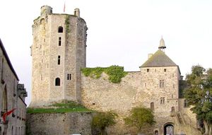
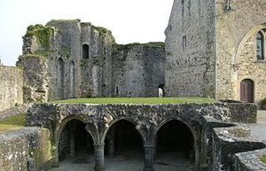
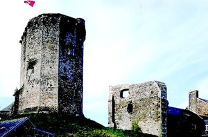
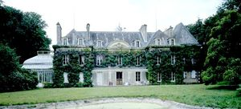
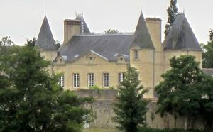

Recensement Jean-Claude Truffet
| Département | 50 — Manche |
| Canton | Bricquebec |
| Commune | Bricquebec |
| Type d'édifice | Vesties-Châteaux |
| Période d'origine | XII-XVIII-XIX |
| Coordonnées GPS | 40° 28' 13" Nord, 1° 37' 57" Ouest |







Trois châteaux dans cet article Bricquebec, St-Blaise et Darnetal. BRICQUEBEC, propriété de la famille Bertran du Xe siècle jusqu'au XIVe siècle, le château appartiendra à Robert VII Bertran, nommé maréchal de France en 1326 et mort en 1348. Le château est transmis par mariage à la famille Paisnel puis aux d'Estouteville. Donné par Henry V au Comte de Suffolk en 1418, il sera rendu en 1450 à Louis II d'Estouteville. Dans le second quart du XVIe siècle, le château est abandonné en tant que résidence par les d'Estouteville au profit du château des Galleries, nouvellement construit à proximité de l'enceinte. En 1534 la seigneurie passe par mariage à François de Bourbon, comte de Saint-Pol, peu à peu délaissé. le vieux château sort de la seigneurie, passée aux Longueville, aux Matignon, puis aux Montmorency . Au XIXe siècle le château est acquis par la commune qui le restaure. ST-BLAISE, a est édifié à la fin du XVIIIe siècle. Adjonction d'un pavillon et construction d'un haras en dépendance dans la deuxième moitié du XIXe siècle. Une cheminée du XVIIe siècle, provenant du château de Sotteville, en remploi dans une salle du rez-de-chaussée. L'édifice conserve un jardin d'hiver de la seconde moitié du XIXe siècle. L'édifice de plan régulier en H, se compose d'un rez-de-chaussée, un étage carré et un étage de comble. Gros-oeuvre en moyen appareil et calcaire, élévations ordonnancées coiffées de toit à longs pans ; pignon couvert et croupe recouverts d'ardoise. Cartouches sculptés sur le fronton central. Saint-Blaise conserve un jardin d'hiver aménagé dans la deuxième moitié du XIXe siècle. Propriété de Fernet Roost.
BRICQUEBEC, le logis seigneurial, composé de deux bâtiments séparés (aula et camera), est édifié dans le dernier quart du XIIe siècle. La partie restante du logis (aula), primitivement composée d'une grande halle de plein pied avec bas-côté attenant, a été divisé en deux niveaux au cours du XVe siècle et son bas-côté supprimé au milieu du XIIIe siècle. Du second bâtiment ne reste que le sous-sol doté d'un voûtement postérieur à sa construction et datant du XVe siècle. La chapelle romane, détruite, est attestée par une charte de confirmation de 1271. Le donjon, édifié en remplacement d'une structure en bois dans la première moitié du XIVe siècle, est établi sur une motte dont l'origine pourrait remonter à la fondation de la seigneurie de Bricquebec, vers le milieu du XIe siècle. L'ouvrage d'entrée principale avec sa tour-porte en saillie sur l'enceinte, a été remplacé une porte maçonnée plus ancienne, dans la première moitié du XIVe siècle, à l'époque où l'on construisait le donjon. La courtine est le résultat de plusieurs périodes de construction. Elle fut remaniée au début du XVe siècle, lors de l'établissement d'un bastion sur son flanc sud. Aux XIVe et XVe siècles, plusieurs bâtiments sont venus s'accoler contre la courtine. Entre le donjon et la grande salle du logis, une importante maison du XVe siècle existait encore à l'état de vestiges au début du XIXe siècle. Un second bâtiment, sur deux niveaux, de la première moitié du XVIIe siècle communiquant avec la courtine et la tour sud-est, existe encore à l'état de vestiges entre les deux édifices constituants les éléments du logis seigneurial du XIIe siècle.Éléments protégés MH : les restes du château : classement par liste de 1840. DARNETAL à Negreville au nord Est. La construction du château de Darnetal date du XIXe siècle.
Bricquebec, Famille d'Estouteville St Blaise , Fernet Roost.
"
Trois châteaux dans cet article Bricquebec grav 1 à 5 , St-Blaise grav-6 et Darnetal grav-7. GPS :40° 28' 13" Nord, 1° 37' 57" Ouest